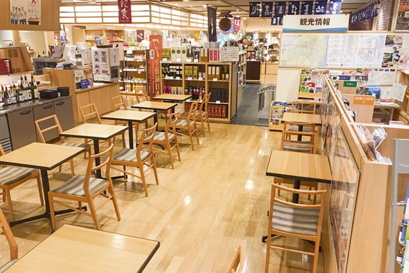
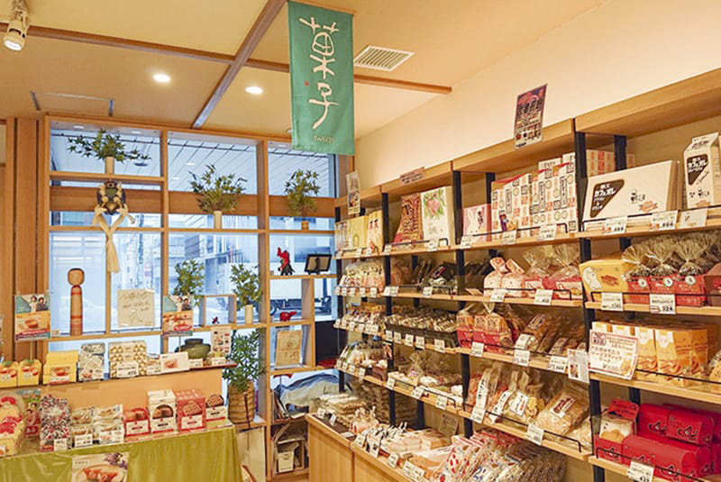
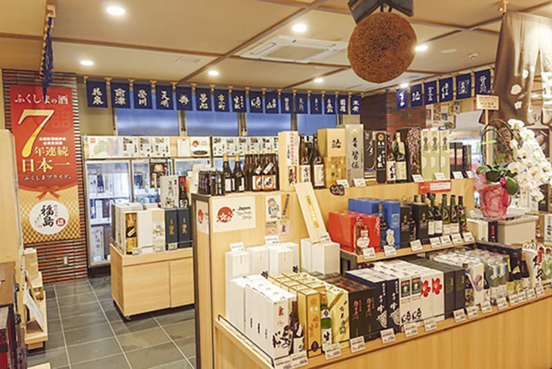
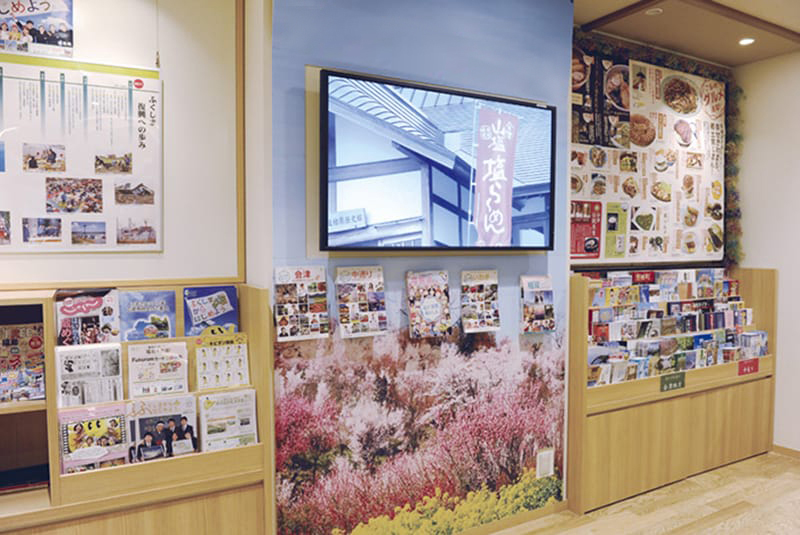
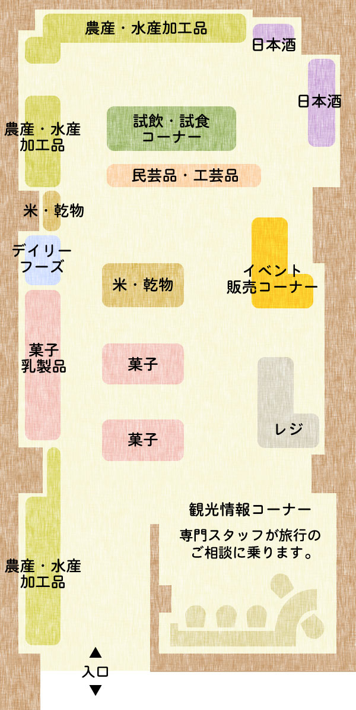
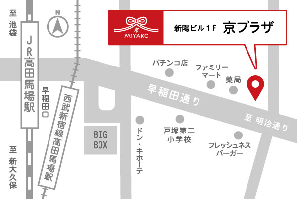

京プラザとは
「京(みやこ)プラザ」は、2022年1月にオープンした、京都の魅力あふれる特産品や観光情報を総合的に発信する拠点施設（アンテナショップ）です。当プラザでは、京都のおすすめ商品の紹介・販売はもちろん、府内の企業や市町村が直接お客様とふれあいながらのイベント販売なども行っています。
また、京都の四季折々の観光・イベント情報をご案内するコーナーを設置しています。「京(みやこ)プラザ」へのご来店を心よりお待ちしています。




フロアガイド
和洋菓子やお茶、伝統工芸品など、京都の文化を感じていただける品々を幅広く取り揃えました。季節ごとの旬の商品の特設販売や、試飲試食などのキャンペーンを随時開催し、京都の新たな魅力をお届けします。

アクセス

JR山手線・西武新宿線「高田馬場」下車、早稲田口より徒歩3分
東京メトロ東西線「高田馬場」下車、7番口より徒歩1分
東京メトロ副都心線「西早稲田」下車、1番口より徒歩7分